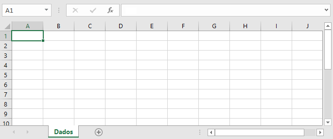
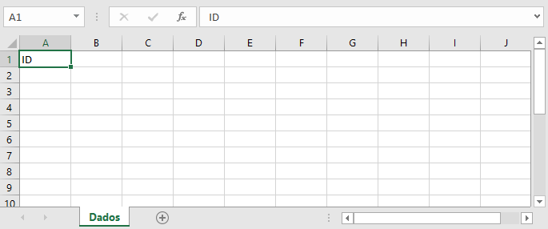
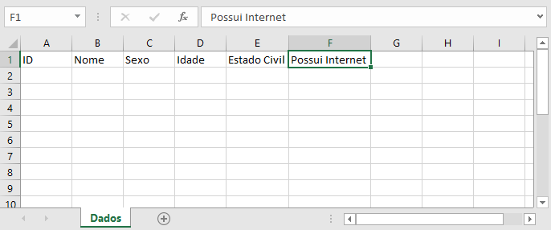
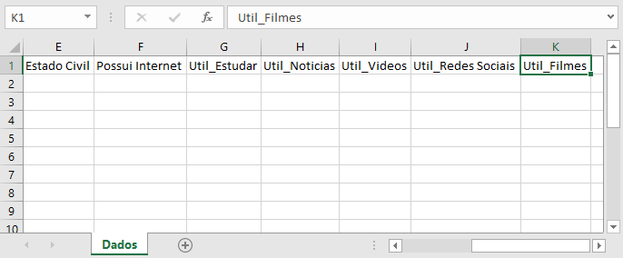
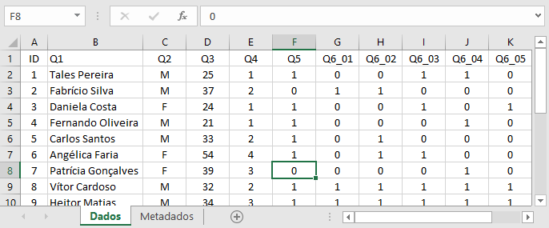
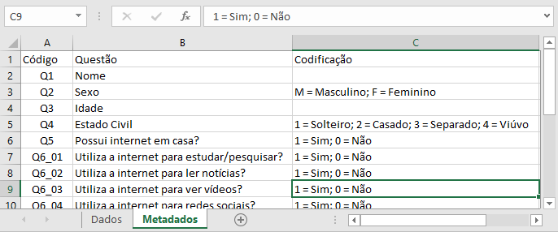

O presente documento foi elaborado com o objetivo de orientar a padronizar o banco de dados da Brandt Meio Ambiente, procurando evitar a ocorrência de vícios nas bases de dados.
Inicialmente é realizada uma breve descrição sobre formatação básica. Por fim, são apresentados alguns padrões de formatação específicos. Com este manual, os colaboradores passam a dispor de uma fonte permanente de consulta de orientações sobre como padronizar, como formatar as planilhas ao armazenar os dados em arquivo Excel.
Trata-se de uma contribuição inaugural, que obviamente poderá demandar futuras ampliações e reedições visando ao aprimoramento do presente manual, mas que objetiva, desde logo, a suprir uma necessidade sentida pela organização. Adotar uma padronização dos dados é parte de um esforço em contribuir para uma administração mais organizada e eficaz.
Os bancos de dados armazenados em planilha Excel devem seguir a seguinte formatação básica:
Para nomearmos um banco de dados em arquivo Excel, adotaremos o seguinte padrão:
Observação: Em relação ao sufixo (caso exista mais de uma planilha no referido Programa/Projeto).
Sendo assim, o nome do arquivo deve adotar o seguinte padrão:
Ex.: 5RC CODIGO DO PROGRAMA/PROJETO NOME DA PLANILHA (200114)-1Em planilhas com especificidades, como dados exclusivos de algum componente, pode-se definir o nome da mesma de acordo com o que é apresentado:
Ex.: "MONITORAMENTO DE QUELÔNIOS", ou "SEMENTES", ou "EDIFICAÇÕES", ou "LIVRO DE REGISTRO"
Planilhas diferentes do mesmo Programa/Projeto devem ser individualizadas com sufixos numéricos "-1", "-2", "-3", etc., após o número do Programa/Projeto
Ex.: 5RC CODIGO DO PROGRAMA/PROJETO NOME DA PLANILHA (200114)-1,
5RC CODIGO DO PROGRAMA/PROJETO NOME DA PLANILHA (200114)-2
Os arquivos originalmente em EXCEL a serem importados devem estar no formato “.xlsx”.
5RC CODIGO DO PROGRAMA/PROJETO NOME DA PLANILHA (200114)-1.xlsx
Caso não seja possível utilizar apenas uma base de dados, procure manter uma variável chave que permita vincular as informações das diferentes bases de dados.

A variável “Identificador” deve ser colocada na primeira coluna da planilha e
tem como objetivo discriminar as unidades amostrais (individualizar cada linha).
- Se isso já ocorre na planilha, não haverá a necessidade de
implementar
novamente;
- Se isso não ocorrer, uma primeira coluna deve ser adicionada, denominada como
"Identificador", e os campos devem ser preenchidos com números em sequência,
que acompanharão a inserção de novos dados na planilha;
- Essa sequência não será modificada com a inserção de novos dados ao longo do
tempo, ela será fixa e novos dados incorporados receberão, sequencialmente, nova numeração;
- Se estiver digitando os dados de um formulário impresso, escreva no questionário
físico o número do ID correspondente na base de dados para facilitar futuras consultas ou verificações.

Preencha o nome de cada variável na primeira linha das colunas seguintes. O importante aqui é a criação de uma variável para cada pergunta do questionário. No exemplo da imagem abaixo, todas informações sobre o estado civil dos entrevistados serão preenchidas na coluna “E” da planilha.
A dúvida que surge neste ponto é: “Como colocar em apenas uma coluna as respostas para questões de múltipla escolha?“
Uma opção é a de estratificar a questão de maneira com que cada opção de resposta tenha uma coluna específica. Em uma pergunta sobre a utilização da internet por exemplo, o respondente poderia selecionar mais de uma resposta. Para cada uma delas, nomearemos uma coluna na planilha de maneira que facilite sua identificação como pertencente à uma questão de múltipla escolha:

Para as pesquisas de campo onde se utilizam formulários em papel por exemplo, cada questionário receberá um número único de identificação, que será preenchido na coluna da variável ID, e sugere-se que esse número seja marcado no questionário impresso para futuras verificações.
Em seguida basta preencher as células com seus respectivos dados. Observe que preencher as respostas das opções de uma questão de múltipla escolha, pode-se colocar “Sim” para o caso da opção ter sido selecionada e “Não” caso contrário.

Nesse ponto, os dados já estão suficientemente estruturados. No entanto, alguns erros podem ter sido cometidos e poderá ser necessário corrigi-los no ambiente de análise. O próximo passo ajuda a evitar alguns destes erros.
Durante o processo de digitação, podem ocorrer alguns erros que precisarão ser corrigidos antes da análise. Ao preencher o estado civil dos respondentes, por exemplo, pode-se acabar digitando “solteiro” para um indivíduo e “solteira” para outro, criando duas categorias diferentes que se referem ao mesmo tipo de estado civil.
Para evitar esse tipo de erro, sugere-se que as variáveis sejam codificadas. Para a questão sobre estado civil, por exemplo, pode-se utilizar a codificação:
Em geral, para questões com opções de resposta “Sim” ou “Não” se utiliza a codificação “1” para “Sim” e “0” para “Não”.
Podemos alterar os nomes das variáveis, o que poderá facilitar o trabalho de leitura do sistema gerenciador de banco de dados que será utilizado para armazenamento. Como exemplo, podemos alterar renomeando as variáveis para “Q1”, “Q2”, “Q3” etc., e para aquelas variáveis que surgiram de uma questão de múltipla escolha, para “Q6_01″, ¨Q6_02”, etc., onde Q6 representa a pergunta e os dois números finais a opção de resposta (Exemplo: “Util_Estudar” para “Q6_01”).

Neste ponto é extremamente indicado que seja utilizada uma outra aba no arquivo para que se registre toda a codificação realizada, para que não exista o risco de se perder alguma informação por faltar a correspondência correta entre o código da base de dados e a resposta dos formulários impressos.
Para isso, sugerimos que utilize:

TODAS as coordenadas espaciais devem estar presentes no Fuso 22 sul, Datum SAD69, sistema de projeção UTM, somente em NÚMEROS, sem decimais, vírgulas ou pontos:
Na coluna para inserção da DATA, os campos devem ser preenchidos no formato DD/MM/AAAA, na coluna para inserção de HORA, os campos devem ser preenchidos no formato hh:mm:ss.
O Banco de Dados Brutos deve apresentar DADOS ACUMULADOS desde o início da execução do Programa/Projeto, até a data de corte do Relatório Consolidado (RC) que o acompanha. Além disso, devem ser EXATAMENTE os mesmos dados apresentados no RC – nem mais, nem menos.
É um repositório centralizado com informações sobre os dados da Brandt Meio Ambiente, tais como: significado, relacionamentos, origem, uso e formatos
.accordion-body, though the transition does limit overflow.
.accordion-body, though the transition does limit overflow.
.accordion-body, though the transition does limit overflow.
.accordion-body, though the transition does
limit
overflow.
.accordion-body, though the transition does
limit
overflow.